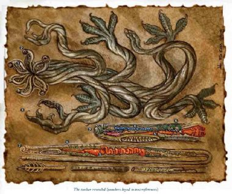

夺躯怪Tsochar, Wearers of Flesh

小型异怪（变形怪）
HD：4D8+12（30HP）
先攻：+4
速度：20英尺，攀爬20英尺
AC：19（+1体型，+4敏捷，+4天生），接触15，措手不及15
基本攻击/擒抱：+3/+4
攻击：触手+8近战（1D4+1）
全回合攻击：4触手+8近战（1D4+1）
占据/触及：5英尺/10英尺
特殊攻击：压榨，精通擒抱，毒素，夺取法术，侵占肉体
特殊能力：DR5/精金，黑暗视觉60英尺，寒冷抗力5，SR14，心灵感应100英尺
豁免：强韧+4，反射+5，意志+8
属性：力量13，敏捷18，体质16，智力15，感知14，魅力13
技能：唬骗+5，攀爬+12，躲藏+12，知识（地城）+6，潜行+8，察言观色+6，侦察+6，使用魔法装置+9
专长：格斗反射，钢铁意志，武器娴熟（奖励专长）
出现地域：寒带森林
组织：单独，一伙（3―8），成群（10―20）
CR：4
财产：标准
阵营：通常混乱邪恶
进化：5HD（小型），6―12HD（中型）；或随职业等级
LA：――
“在你面前的生物，看起来就是一堆乱七八糟地盘绕在一起的绳子一样的触手，湿漉漉，滑溜溜，黏呼呼，并且如同血管般脉动着。这些闪烁着蓝黑色光泽的触手顶端长着小小的粉红色倒钩。如果这东西有躯干部分的话，那就应该是隐藏在那堆不停扭动屈伸着的触手深处。”
来自外星（原文是distant realm，但是……）的可怕入侵者，夺躯怪是一种擅长渗透的古怪种族，拥有占据并控制受害者的躯体从而打入尚未察觉其存在的类人种族社会内部的能力。它们对法术有着强烈的兴趣，尤其是奥术――――它们非常希望能够猎取类人生物法师的身体以使自己能够使用自己所没有的法术。
夺躯怪的外观类似一堆盘绕在一起的，多节的绳子或者由带倒钩的铁丝团成的球体。它拥有12只纤细但强壮的触手，每只都长有小巧锋利的镰刀状利爪。它的躯干只不过是触手中比较粗实的一段，并且与其众多肢体之间没有显著过渡。夺躯怪的眼睛是一种小小的，生长在触手较细小的末端的黑色球体，深藏在其盘绕成团的肢体中。并且它的嘴巴则是一个位于头部内侧，类似七鳃鳗的圆形口器。夺躯怪的形体呈靛蓝色，而在外表面上则有比较浅的蓝色纹路。
夺躯怪说它们自己的语言，但也可以用其心灵感应能力与其他生物沟通。尽管构成一个典型的夺躯怪形体的最长触手（也就是所谓的夺躯怪个体Tsochari Strand，详情见后）可以长达6到8英尺，但其躯体的总直径却只有2英尺左右，重量将近25磅。
战斗
夺躯怪通常不会使用自己的肉体。一般来说，它们都是存在于被寄居或侵占（replacing，见下）的类人生物体内，隐藏自己的存在。由于夺躯怪并不能获得被自己侵占的躯体生前的记忆，所以使用一些细心的询问就不难识破它的伪装――――虽然夺躯怪通常不会让自己的逗留时间长到能够令其真面目被暴光。
当其寄居于类人生物体内，夺躯怪在战斗中没有多少选择。除了指挥寄主根据其指令战斗以外，它不能进行其他肉体活动。当一个夺躯怪侵占了一个类人生物的躯体时就可以使用受害者先前知道的奥术，但是夺躯怪在战斗中会尽量不使用以这种方式获得的法术，因为这些法术毕竟不是自己的，它没办法同过休息来恢复。
一个以自己本来面目行动的夺躯怪能够更加容易地以其触手将手无存铁的人类撕成碎片。但是，与其攻击一支队伍，夺躯怪更倾向于通过潜行和伏击来对付落单的目标。它会设法擒抱并紧紧缠住敌人，通过钢铁般坚韧的触手的碾压和毒素令他或她进入无助状态。当受害者无法行动时，夺躯怪就可以钻进其体内。
碾压（EX）：夺躯怪能够通过成功的擒抱鉴定造成2D4+2伤害。当夺躯怪造成碾压伤害时，会将毒素注入目标体内。
精通擒抱（EX）：要使用这个能力，夺躯怪必须以至少两条触手命中敌人，此时即可开始以一个即时动作进行擒抱而不会招致借机攻击。如果其擒抱成功，则可定住敌人并进行碾压。
夺躯怪在擒抱鉴定中获得+4种族加值，已经计入以上数值中。
毒素（EX）：伤口传播，强韧DC15，先后两次受到1D3敏捷伤害。DC基于夺躯怪的体质。夺躯怪的毒素由其造成碾压伤害时注入目标体内。
夺取法术（SU）：当夺躯怪侵占施法者的肉体后保留所有该人物生前没有用掉的奥术，并且可以施展之。夺躯怪要施展这些法术必须在关键属性上达到施法要求（例如，如果侵占了一个法师的躯体就以智力为关键属性），否则就无法施展该法术。如果夺躯怪侵占了一个自发施法者例如术士，它保留该人物生前没有用掉的全部法术位，并且可以使用寄主生前所能施展的任何法术。无论哪种情况，夺躯怪在用掉寄主生前掌握的法术或法术位后都无法通过休息而再次使用。
侵占肉体（SU）：夺躯怪能够钻进一个处于无助状态的活物体内，将其坚韧的触手挤进寄主器官与肌肉之间的空隙里而消失在受害者体内。受害者的体型不能比夺躯怪的体型更小，并且这个过程需要1分钟时间。夺躯怪可以选择侵占或寄居（见下）受害者的体内。虚体生物与构装体，元素，泥形生物，植物或不死生物免疫该能力。（奇怪的是，该能力居然是超自然的？）
夺躯怪可以一个附带3D6伤害的全回合动作放弃或侵占寄主的身体。移除疾病或反制邪恶法术（施法者等级鉴定DC20，对寄主造成3D6伤害）可以迫使夺躯怪离开寄主的身体。医疗术或有限许愿也可以产生这个效果，但不会对寄主造成伤害。
寄居：夺躯怪让受害者活着并且保持清醒。任何时候只要它想，就能以一个标准动作对寄主造成难以想象的痛苦，造成从1D6到6D6不等的伤害，并且寄主必须通过一次DC15的强韧豁免，否则将因为这可怕的痛苦而反胃2D4轮。夺躯怪可以自行决定在这次攻击中造成多大伤害。
当夺躯怪寄居于寄主体内是不能进行肉体活动，但可以使用精神活动（就如同以其心灵感应与寄主交谈，以伤害或杀死寄主来胁迫寄主执行自己的命令）。
当寄主受到伤害（除了夺躯怪自己造成的），处于寄居状态的夺躯怪也要受到一半伤害。例如，如果寄主因为受到冰锥术攻击而受到28点伤害，那么夺躯怪也要受到14点寒冷伤害。
寄居于类人生物体内的夺躯怪以寄主的血液与体组织为食，每天造成1D3体质伤害。通过DC15的强韧豁免可令体质伤害减半。终有一日这个被夺躯怪寄生的虚弱生物将会死去，但是夺躯怪的聪明却足以使其能够引导寄主寻求医疗法术来使他们继续活下去，如果情况需要的话。
侵占：夺躯怪侵入受害者的神经系统而将其杀死，这样夺躯怪就能把自己作为这个实质上已经死去的躯体的神经系统而指挥其行动。这个肉体仍然活着，但却是作为夺躯怪的肉体。
这个作用的效果类似于使夺躯怪精确变形成寄主的变形术，除了夺躯怪可以保留受害者的形态达数年之久，并且在选择结束该效果的时候会留下受害者的尸体。在这种状态下夺躯怪使用寄主生前的生理属性，如同变形术中的说明。夺躯怪可以无限期地保留该形态，但如果它放弃这个肉体就不能再次使用之。
侵占一个类人生物躯体的夺躯怪会从内部慢慢吞噬掉它们新外壳。一个被侵占的身体每个月受到1D4体质伤害，不能自然恢复而只能通过法术的力量恢复。成功通过DC15的强韧豁免可令该体质伤害减半。自然地，夺躯怪会在当前使用的躯体变得过于虚弱而无法使用之前就将其抛弃。
心灵感应（SU）：夺躯怪能够通过心灵感应同100英尺内任何有语言的生物交谈。
技能：夺躯怪在攀爬鉴定中获得+8种族价值并以敏捷代替力量作为关键属性。它们总是能在攀爬鉴定中取10，即使在受到干扰或威胁的情况下。夺躯怪在使用魔法装置鉴定中获得+4种族加值。
夺躯怪角色
绝大多数夺躯怪通过HD而进化。其种族的领导者，夺躯怪贵族，拥有奥术施法者的职业等级。最强大的夺躯怪法师能够在夺躯怪世界与主物质位面之间开启异界之门（就是Gate这个法术）来派遣特工渗透入类人生物的城市或王国。
夺躯怪尊崇一位被称为Mak Thumm Ngatha，尊号九舌之虫（Nine-Tongued Worm，见177页）的神明。夺躯怪牧师非常罕见，但是绝非闻所未闻，其神域为毁灭、知识、疯狂与旅行。
夺躯怪的生理构造

夺躯怪产生于另一个不同的世界。夺躯怪的肉体畸形地强壮和坚韧，和这个世界的生物所拥有的躯体相比它们更接近钢缆。这包括了它们的伤害减免能力和惊人的强壮。
其实夺躯怪并非一个单独生活的生物，而是一种共生体。每个夺躯怪都由一打盘绕的触手与肢体构成，事实上，那是一种凭借自身的特殊能力联结起来的，被称为夺躯怪个体（Strand）的生物。一个夺躯怪个体都拥有自身独立的神经系统与呼吸、消化与生殖器官。只要其小心地脱离其当前的躯体，每个个体都能无限期地独立存活，但在这种情况下，这个个体明显地会因此而失去意识。只有当20或30个相似的个体将它们的神经中枢与血管联结成一个整体，这些夺躯怪个体才能够获得群体意识和自我。
就像那些生活在普通世界中的原始生物（比如水母），夺躯怪个体表现出一种根据它们的生存方式而高度特化的生理特征。举个例子，夺躯怪那如同七腮鳗一样的嘴巴（见图标1）实际上是由4到8个夺躯怪个体的特化口器在长期共同生长的过程中互相融合而成。用于战斗和移动的肢体也是另一种在共生中形成的特化器官，就像那些末端拥有黑色的眼部构造（2），起感知作用的肢体。当它们在群居共生过程中共享各自的神经组织、血管与感官，多个夺躯怪个体就这样凝聚成了一个单独的整体，非常类似那些普通世界中容易受到外敌伤害的生命形态
夺躯怪个体长约3到8英尺，平均直径半英寸左右，但是它们总是互相盘绕纠集而形成“躯干”。相对于其体型与重量，夺躯怪个体惊人地强壮和坚韧，以大量镰刀状的倒钩作为武器（3）。这些倒钩内拥有小小的空腔或管道，这样当夺躯怪以这些倒钩造成伤害时就可以将毒素注入目标体内。但是单独的倒钩都几乎不能造成什么伤害，只有当大量的触手协同运作，大量的倒钩（类似锯子上的锯齿）才能有效注射那危险的毒素。那就是为什么只有当夺躯怪在对目标进行碾压攻击时才能将毒素注入目标体内的原因。
夺躯怪的内在本能决定了构成这样一种共生体所需要的个体数量的最低限度。在这些个体中，最重要的器官被集中到末尾或“头部”前端，该部分把各个个体联结在一起。其大脑（4）是一束看起来如同一串珍珠的的神经中枢。用于消化从其“嘴部”收集到的食物的消化道（5）与食道没有区别。每个夺躯怪个体都通过肌肉的运动来运输血液，这就是为什么夺躯怪总是在屈伸和脉动的原因。夺躯怪从遍布个体各个部分的小孔（6）吸取氧气。
夺躯怪的感官
不像与之类似的其它异怪类种族，夺躯怪拥有极为另类的感官。夺躯怪在完全的黑暗中照样能正常视物，并且拥有“看见”热量的能力，即使它们并没有真正的红外视觉。一个夺躯怪通常拥有5到8个起眼睛作用的个体（eye-strands），很好地隐藏在大量用于移动和战斗的肢体中。每只眼睛单独的能力都不算强，但当多只眼睛把视线聚集在一个最重要的目标上时，它的视觉能力就与人类在良好环境中的视觉相当或更好。当夺躯怪使用多只眼睛观察同一个目标，它就会失去因为多个视觉器官所带来的全域视觉能力，以及没有明确身体朝向的特性（也就是说，可能被敌人从看不到的一面夹击）。
夺躯怪的听觉不比人类差，即使是在自己的故乡那种环境里。Undoubtedly,Shrieking winds scouring their homeworld made hearing a sense that provided little information to the forebears of the race.（这句话到底怎么翻译的好？看起来好象是对喧嚣空隧的描述。）夺躯怪没有真正意义上的嗅觉，取而代之的，它们可以像蛇一样，用口器“品尝”周围的环境中的气味。它们的触觉并不发达，因为它们坚韧的躯体抵消了那些能够被皮肤柔软的人类轻易感觉到的轻微碰触与刺激。
夺躯怪最不寻常的感官就是它们的心灵力量。它们能够感受到大致的情绪反应，并轻易地通过心灵感应接收与发送信息。有些比较敏感的夺躯怪可以通过这种能力侦测和精确定位附近的生物，但大多数夺躯怪都不能做到这一点（因为它们没有选用Mindsight专长）。
寄生
相对于其它异怪，夺躯怪的生理结构更适于利用其他种族的生物。底栖魔鱼、触须怪（Grell）和夺心魔频繁地食用与奴役类人种族，而夺躯怪则拥有寄生于其他生物活着的体内，并维持这个状态从几个月到几年时间的独特能力。
当夺躯怪巧妙地在不杀死受害者的情况下将其细长的触手塞进寄主的体腔内时，它仍然需要足够容纳自身的空间。夺躯怪只能侵入与其体型相同或更大生物的体内。因此，一个体型为小型的典型夺躯怪能够侵入体型为小型或更大的生物。侵入小型类人生物体内的夺躯怪会因为自己身体的生长而失去这个能力并不得不放弃当前使用的躯体，仅仅是因为它的体型相对于现在的寄主太大了。如果有机会的话，它们能，并且会去侵占更大体型的生物。
夺躯怪的肢体会伸展入受害者肌体内的各个关键部分，并且将自己的神经中枢与寄主的主要神经与血管联结起来。在这个过程中它会有意避免对其造成致命伤害，以便受害者的躯体能够继续容纳这个不受欢迎的房客，或者直接杀死并取代其脑组织和主要神经系统，以及其他重要部分。在前一种情况里，受害者会恢复意识并保持清醒，而且非常清楚有个怪物正存在于他或她的体内。在后一种情况，受害者会在无法想象的痛苦中死去，彻底离开这个已经成为夺躯怪的画皮的躯体。
一个被夺躯怪寄生的类人生物粗看上去没什么异常，但是如果凑近了仔细观察的话就会发现几条足以暴露其存在的异常特征――稍微膨大的肚子；皮肤下面如同蛇一般蠕动的线条；在肚脐、咽喉或耳朵眼里闪烁着蓝黑色光泽的异类肉体。
繁殖
夺躯怪是雌雄同体生物，每个夺躯怪个体（Strand）都同时拥有雌性与雄性生殖器官，并且在任何时候都能繁殖。通常，一个夺躯怪每隔5到10年就繁殖一次，每一窝都拥有上百个小而坚韧的卵。每个卵都能孵化出一条夺躯怪个体(Tsochari Strand)，个体之间没有什么区别。任何一个单独的夺躯怪个体并不能算是一只真正意义上的夺躯怪，只有当三十到四十条这样的夺躯怪个体聚集，并且联结成一个整体时，一个新的夺躯怪才正式产生。新的共生体可以完全源于一个母体，但是夺躯怪们并没有专门去证实这一点。当夺躯怪繁殖时，更普遍的情况是一个新的夺躯怪将由来自多个母体的个体聚合形成，这些个体都是由很多个不同的夺躯怪产下并混合在一起卵中孵化。因此，一个单独的成年夺躯怪可能会拥有来自多个不同地方，数量从一个到成打的不同的母体。
生长与繁殖
一个单独的夺躯怪个体只是一个成年夺躯怪的一小部分。在它们生命最初的四到八周，在同一地区的个体开始遇到彼此并开始自我组织，一个一个互相联结成一个共生的整体。这个聚集成的共生体开始共同生长，口器互相融合，血管与神经互相联系，并且将在孵化大约一年后觉醒的整体意识也开始慢慢发育。
夺躯怪事实上是不朽的。构成其身体的个体会因为年龄而死亡，但一个发育完全的夺躯怪能够通过更新构成其身体的零件（夺躯怪个体）而防止衰老。在夺躯怪产下的大量卵中孵化出的夺躯怪个体有将近一半被用来更新成年夺躯怪的肉体（另一半视情况用来制造新的夺躯怪）。一个单独的夺躯怪个体可以存活大约100年。
夺躯怪会随着年龄的增长，由于添加比它们所失去的更多的个体而变得更大。而随着一个夺躯怪继续添加更多的个体，这些构成其身体的个体本身也会逐渐长大。非常年长的夺躯怪会由上百或更多的个体构成，这些个体全长可达20英尺，直径3英寸。
在非常罕见的情况下，一个夺躯怪个体会因为找不到其他同类并与之融合，而因此作为一个小小的，单独的捕食者生活，捕捉啮齿类动物和虫子维生。一个单独的夺躯怪个体的特性见下：
夺躯怪个体：CR1/2，微型异怪HD1/2D8+1；HP3；先攻+3，速度20英尺，攀爬10英尺；AC17，接触15，措手不及14；基本攻击+0；擒抱―7，攻击或全回合攻击+5近战（1D3―3），精通擒抱，毒素；特殊能力：伤害减免5/精金，黑暗视觉60英尺，寒冷抗力5；阵营：中立；豁免：强韧+1，反射+3，意志+3；力量4，敏捷16，体质12，智力2，感知13，魅力9
技能与专长：攀爬+13，躲藏+13，侦察+3；格斗反射，武器娴熟
语言：无
碾压（EX）：夺躯怪个体能够通过成功的擒抱鉴定造成1D3―3伤害。当夺躯怪造成碾压伤害时，会将毒素注入目标体内。
精通擒抱（EX）：要使用这个能力，夺躯怪个体必须以触手命中一个小型或更小的敌人，此时即可开始以一个即时动作进行擒抱而不会招致借机攻击。如果其擒抱成功，则可定住敌人并进行碾压。
夺躯怪在擒抱鉴定中获得+4种族加值，已经计入以上数值中。
毒素（EX）：伤害，强韧DC11，先后两次受到1点敏捷伤害。DC基于夺躯怪个体的提制。夺躯怪个体的毒素由其造成碾压伤害时注入目标体内。
夺躯怪变种
大约有十分之一的夺躯怪属于贵族阶层。它们拥有比其同类更高的智力，并且在像普通夺躯怪那样生长的同时也能够通过职业等级来进化。一个典型的夺躯怪贵族是一个8HD的夺躯怪，并且拥有4或更高的术士等级。最大与最年长的夺躯怪是可怕得难以置信的术士，以铁碗统治其比较弱小的同类的邪恶与古老个体。
夺躯怪因为它们的心灵感应能力而很适合选用心灵之眼这个专长，具体见下。
心灵之眼Mindsight
拥有这个专长的生物可以通过天生的心灵感应能力在其作用范围内精确定位其他有思想生物。该生物能够知道它们的位置并了解其智力水平。
先决条件：拥有心灵感应能力
效果：拥有该专长的生物能够侦测与定位在其心灵感应范围内的任何非无意识（任何拥有智力属性的生物）生物。该效果非常类似盲感――该生物能够清楚地知道周围有思想生物的方位，但并不能真正看到目标。除非该生物能够从其他方式看到目标，否则目标仍然处于全隐蔽状态。
该生物也可以通过该专长侦测到目标生物的一些基本特性，包括该生物的种类和智力属性值。该生物不需要任何额外或特殊动作来获得这些信息，就如同通过眼睛观察目标的种族和衣着一样直截了当。
正常：心灵感应能力并不能感受到其他生物的思想。该生物只有在以心灵感应进行通讯的时候才能知道目标的位置。
夺躯怪的社会
夺躯怪是恶毒的，野心勃勃的，贪婪的，和自我中心主义的。它们事实都能够策划并实施针对另一同类的任何谋杀计划，除非这个夺躯怪还没有做好对自己的同伙之一造成严重伤害的妥善准备。它们的毒素与侵占身体能力对同类无用，并且它们坚韧的躯体很难被自己的天生武器伤害。两个夺躯怪常常会战斗一整天而无法伤害彼此。
自从它们发现自己对彼此的物理攻击拥有很强的抗力后，夺躯怪便自发地限制了它们之间为了竞争阴谋、地位和声望而进行的战斗。夺躯怪的社会被组织为多个互相竞争的阶层，永远都在争夺权力与财富。其中五个最重要的阶层分别是贵族，牧师，奥术师，士兵和商人。其他阶层也许会拥有比它们更多的成员，但它们很少影响到其他种族的生物。
贵族是夺躯怪的统治者，由族群中的精英特别是强壮的，年长的，邪恶的和狡猾的个体组成。没有夺躯怪会因为自己的出身而得到优待；这些生物没有家庭或世袭的概念，取而代之的是，任何一个证明了自己的才干、精明和残忍的夺躯怪最终都可以慢慢晋升到贵族阶层。在其他阶层中的上级个体经常在获得了足够的地位与财富后抛弃它们之前所服务的阶层进入贵族圈子。
牧师也许是最有力量的阶层。夺躯怪非常热心地献身于它们邪恶神明的事业，Mak Thuum Ngatha的教会在夺躯怪社会中极有影响力，即使是贵族也必须重视牧师们宣读的神意。夺躯怪牧师们把对其它世界的种族（比如人类）的掠夺与牺牲视为夺躯怪种族的神圣权利，并且始终坚持不懈地设法扩大九舌之虫的影响力。
夺躯怪奥术师吸收和学习从其他种族那里偷来的魔法知识。所有的夺躯怪都对奥术有着强烈的兴趣，夺躯怪奥术师都拥有术士或法师职业等级（……废话）。
Tsochari plots to subvert human wizard’s guilds arise in the black halls of the arcanists.（这句话是什么意思？the black halls of the arcanists?）
夺躯怪士兵听从统治阶层的指示，负责完成贵族、牧师和奥术师阶层的委托。士兵们通过提供有用的服务，展示它们的成就，以及绝对冷酷无情的意志来谋求攀升为贵族。士兵阶层经常权衡互相竞争的贵族阶层与牧师阶层，判断贵族的委托和贵族的旨意，到底接受哪方面的命令才是明智的。
夺躯怪商人实际上并不是真的经商，因为除非实在没有别的选择，否则夺躯怪们是绝不会为了得到自己想要的东西而出钱的。它们更类似于作为工作范围广泛的探险者，劫掠者，奴隶贩子，以及密探之类，在对其他较弱种族带来灾难的同时寻找使自己发财的机会
语言
夺躯怪说它们自己的语言，夺躯怪语（Tsochar）。这种语言由夺躯怪个体互相摩擦而产生的大量锉磨声与翁翁声构成。类人生物可以通过学习而听懂它们之间的交谈，但却没办法说出来。由于夺躯怪能以心灵感应交谈，使得夺躯怪语相对比较简单，这种语言拥有大量的技术术语与概念性词汇，但却没什么语法。该语言的存在意义主要就是用来将夺躯怪们之间以心灵感应进行的交谈转化为字面形式。
夺躯怪很少使用其它种族的语言，更多的是依赖于它们的心灵感应能力交涉。典型的，一个夺躯怪说夺躯怪语，通用语和其它一种在与特定种族交涉时有用的额外语言，例如龙语，巨人语，地精语，兽人语或地底通用语。夺躯怪用这些语言说话的技术远不如对语言的理解力那么好，因为它们的发音器官一点也不像类人生物的嗓子。当它们以类人生物的语言大声说话时，其声音非常的尖细，音调极高并且混有令人厌恶的翁翁声。一个寄居或侵占了类人生物躯体的夺躯怪说的话更容易理解，因为它能够利用寄主的嗓音协助交谈。
宗教
夺躯怪是宗教信仰最为强烈的异怪种族之一。Mak Thuum Ngatha教团由夺躯怪社会中的精英牧师阶层构成，甚至比贵族阶层还要有权力和影响力。九舌之虫被夺躯怪视为无尽知识的源头，阻碍它们的敌人的毁灭，以及对时间与空间的超越等所有被夺躯怪深深敬畏的事物的化身。反过来，Mak Thuum Ngatha也把夺躯怪们作为自己最眷顾的仆役与代理人（就如同它眷顾的任何人或任何东西），并且将很多它认为重要的事务委托给它的夺躯怪牧师处理。
自从Mak Thuum Ngatha成为夺躯怪们的主流信仰，它就命令自己的夺躯怪牧师们设法推广对自己的崇拜，并且将黑暗与危险的知识传播给其它种族与土地。在绝大多数情况下，这是指那些生活在主物质位面的类人生物。所以在这种情况下夺躯怪牧师通常就是九舌之虫与那些足够愚蠢或不计后果而被许诺使之获得力量的夺躯怪牧师们所蛊惑的类人生物联系的使者或信使。已经不只一个Mak Thuum Ngatha的人类敬拜者在夺躯怪牧师的要求下通过可怕的献祭而换得夺躯怪间谍或杀手的服务。
Simple Characters:Akhando and Xheek Thosss(EL10)
略
领导者
夺躯怪始终都在为了地位而互相争斗，寻找向贵族阶层证明自己能力、野心、智慧与价值的机会。实际上，商人与士兵阶层一直就在这样做。奥术师阶层比较关心于指挥它们的下属并专注于钻研魔法力量，而牧师阶层则热衷于享受它们的地位和影响力，对于它们来说与其设法谋求贵族阶层的认同，还不如设法继续提高自己在牧师阶层的地位更划算。
由于贵族阶层会从其他阶层中挑选新成员，所以能或多或少地得到其他夺躯怪的忠诚和信任。毕竟，因为没有完成其指示而惹火一个贵族通常就意味着自己再也无缘晋升上级阶层。但是一个公然违抗命令的低级夺躯怪很少因此而受到警告或惩罚，好象它们本来就有权力无视上级的命令似的。毫无疑问，这个种族之所以没有陷入无止境的争斗与内战实际上完全就是因为两个相关的因素：种族性的对魔法的狂热兴趣；以及种族性的对获得来自遥远国度的强大力量的渴望。
在贵族阶层内部，资历，个人力量和狡诈决定了一个夺躯怪贵族在本阶层内的地位。新进贵族会寻求年长者、更强大的夺躯怪的支持，并努力贯彻长老们的意图。高级贵族能够拥有一些忠诚的次级贵族作为盟友，而真正意义上的顶级贵族则很稀少，每个这样的家伙都是作为一个城市乃至一个国度的最高统治者。在夺躯怪社会中，出身说明不了任何东西；顶级贵族拥有极大的势力，它们通常都能保持自己的地位达几个世纪，直到被某个野心勃勃的下属赶下台为止。
与其它种族的关系
夺躯怪蔑视绝大多数其他的生命形式，它们因为觉得其他强大异怪种族和它们是一类的，从而认可其存在，并且在情况允许的时候会与纽吉怪或夺心魔之类的生物保持着一种冷淡的联系。当夺躯怪以其特殊能力到处旅行并因此而遭遇其他古老的种族时，它们在内心中很不喜欢大多数其他异怪种族对自己神明那漠不关心的态度。夺躯怪喜欢与袋衣怪(Cloaker)联盟，共享它们的目标。
对于夺躯怪来说类人生物只比牲口高级那么一点，可以随意作为外壳使用和抛弃。类人生物种族的存在可以为夺躯怪带来财富、魔法和可以用来贡献给Mak Thuum Ngatha这类伟大存在的上好祭品。夺躯怪渴望有朝一日能够发动真格的大规模袭击，这样就能获得高级法师和伟大牧师们的躯体，并使自己成为能够永远在暗中奴役人类的主宰者。 |